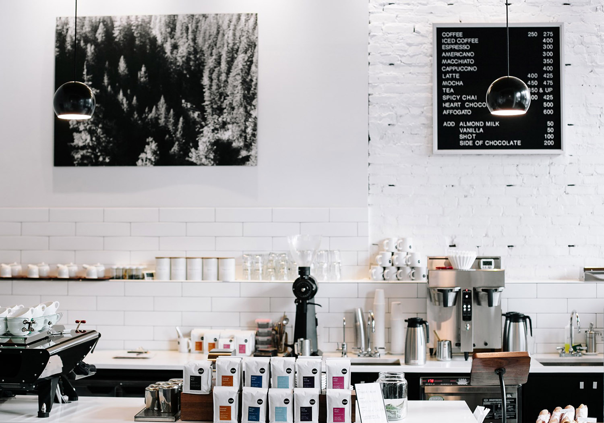
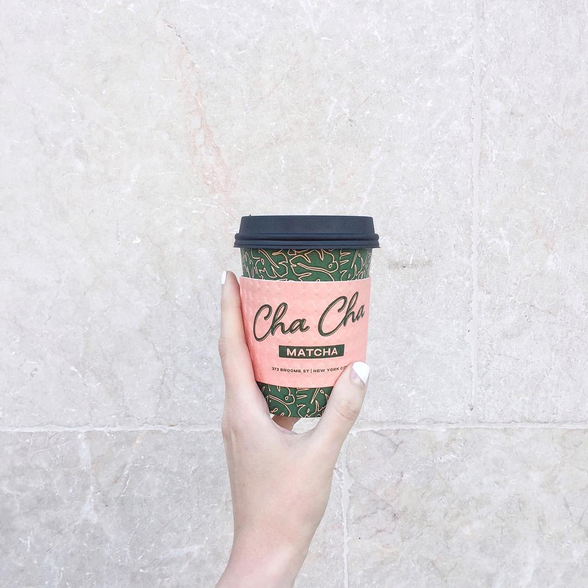

jump to method:
A guide for the coffee enthusiast (who cant make coffee)
SEARCH BY CITY:
COFFEE ITSELF
New York / Los Angeles / Dallas / St. Louis / Seattle / Houston / Portland / San Francisco
EXTRACTION
Proper brewing of coffee requires using the correct amount of coffee grounds, extracted to the correct degree (largely determined by the correct time), at the correct temperature. More technically, coffee brewing consists of dissolving (solvation) soluble flavors from the coffee grounds in water. Specialized vocabulary and guidelines exist to discuss this, primarily various ratios, which are used to optimally brew coffee. The key concepts are:[9] Extraction Also known as "solubles yield" – what percentage (by weight) of the grounds are dissolved in the water. Strength Also known as "solubles concentration", as measured by Total Dissolved Solids – how concentrated or watery the coffee is. Brew ratio The ratio of coffee grounds (mass, in grams or ounces) to water (volume, in liters or half-gallons): how much coffee is used for a given quantity of water. These are related as follows: Strength Brew ratio × Extraction which can be analyzed as the following formula:
Coffee preparation is the process of turning coffee beans into a beverage. While the particular steps vary with the type of coffee and with the raw materials, the process includes four basic steps: raw coffee beans must be roasted, the roasted coffee beans must then be ground, the ground coffee must then be mixed with hot water for a certain time (brewed), and finally the liquid coffee must be separated from the used grounds. Coffee is usually brewed immediately before drinking. In most areas, coffee may be purchased unprocessed, or already roasted, or already roasted and ground. Coffee is often vacuum packed to prevent oxidation and lengthen its shelf life.
GRINDING
Coffee can be brewed in several different ways, but these methods fall into four main groups depending on how the water is introduced to the coffee grounds: decoction (through boiling), infusion (through steeping), gravitational feed (used with percolators and in drip brewing), or pressurized percolation (as with espresso). Brewed coffee, if kept hot, will deteriorate rapidly in flavor, and reheating such coffee tends to give it a "muddy" flavour, as some compounds that impart flavor to coffee are destroyed if this is done. Even at room temperature, deterioration will occur; however, if kept in an oxygen-free environment it can last almost indefinitely at room temperature, and sealed containers of brewed coffee are sometimes commercially available in food stores in America or Europe, with refrigerated bottled coffee drinks being commonly available at convenience stores and grocery stores in the United States. Canned coffee is particularly popular in Japan and South Korea. Electronic coffee makers boil the water and brew the infusion with little human assistance and sometimes according to a timer. Some such devices also grind the beans automatically before brewing. The French press is considered one of the oldest and simplest methods to brew coffee. Despite its simplicity, it can be a little tricky. The most important part of the process is to not leave the coffee in the French press for too long after pressing.[3]
BREWING
Coffee can be brewed in several different ways, but these methods fall into four main groups depending on how the water is introduced to the coffee grounds: decoction (through boiling), infusion (through steeping), gravitational feed (used with percolators and in drip brewing), or pressurized percolation (as with espresso). Brewed coffee, if kept hot, will deteriorate rapidly in flavor, and reheating such coffee tends to give it a "muddy" flavour, as some compounds that impart flavor to coffee are destroyed if this is done. Even at room temperature, deterioration will occur; however, if kept in an oxygen-free environment it can last almost indefinitely at room temperature, and sealed containers of brewed coffee are sometimes commercially available in food stores in America or Europe, with refrigerated bottled coffee drinks being commonly available at convenience stores and grocery stores in the United States. Canned coffee is particularly popular in Japan and South Korea. Electronic coffee makers boil the water and brew the infusion with little human assistance and sometimes according to a timer. Some such devices also grind tshe beans automatically before brewing. The French press is considered one of the oldest and simplest methods to brew coffee. Despite its simplicity, it can be a little tricky. The most important part of the process is to not leave the coffee in the French press for too long after pressing.[3]
SEPARATION
Coffee in all these forms is made with roasted and ground coffee and hot water, the used grounds either remaining behind or being filtered out of the cup or jug after the main soluble compounds have been extracted. The fineness of grind required differs for the various brewing methods.
Go back to Homepage